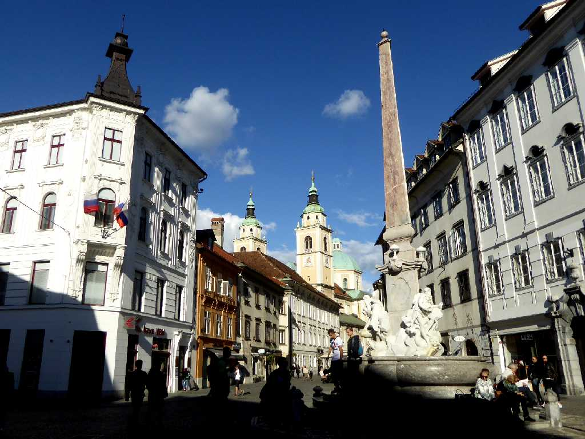
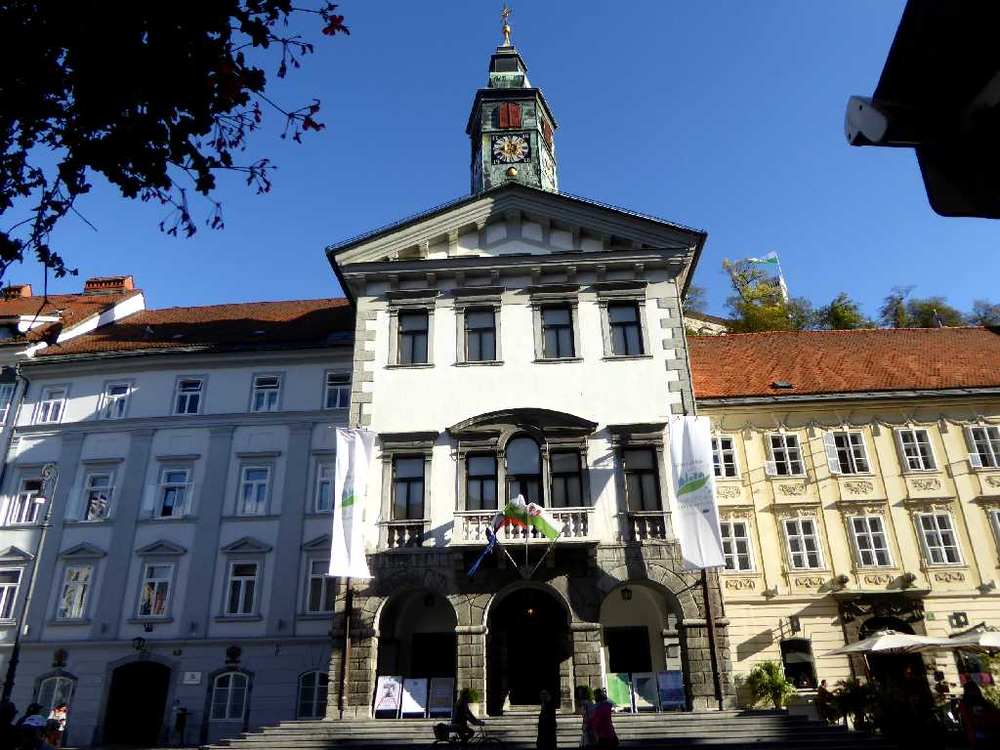
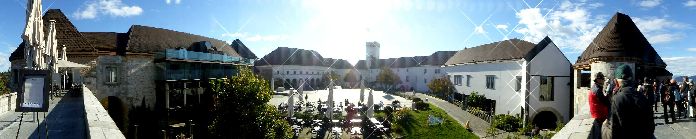
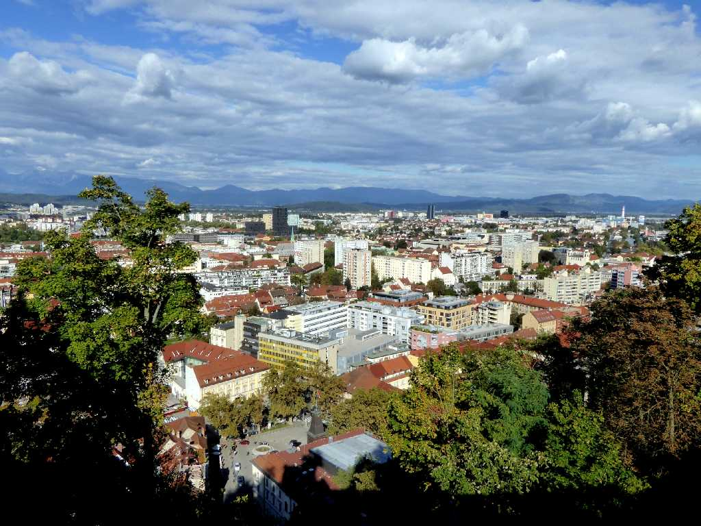
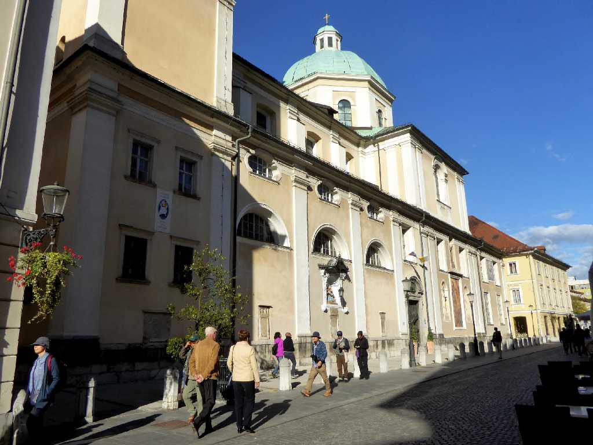
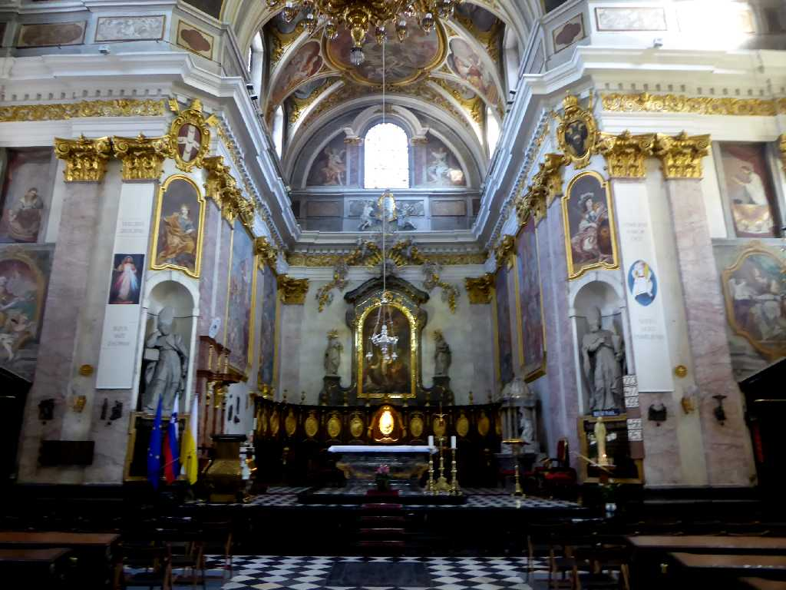
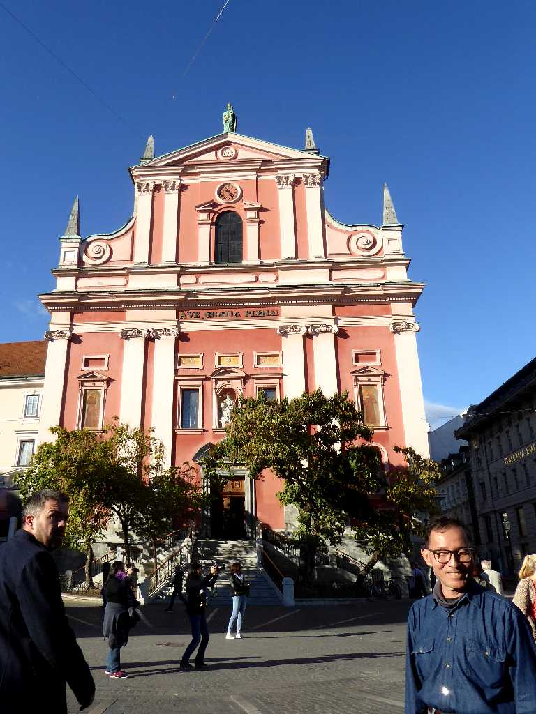
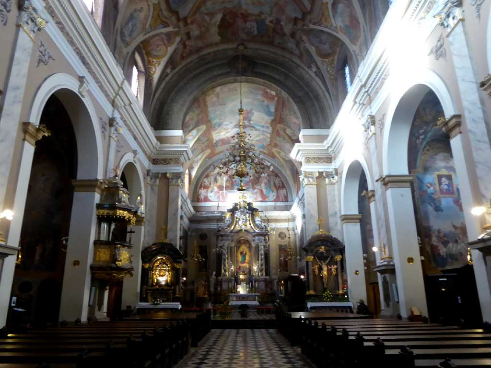
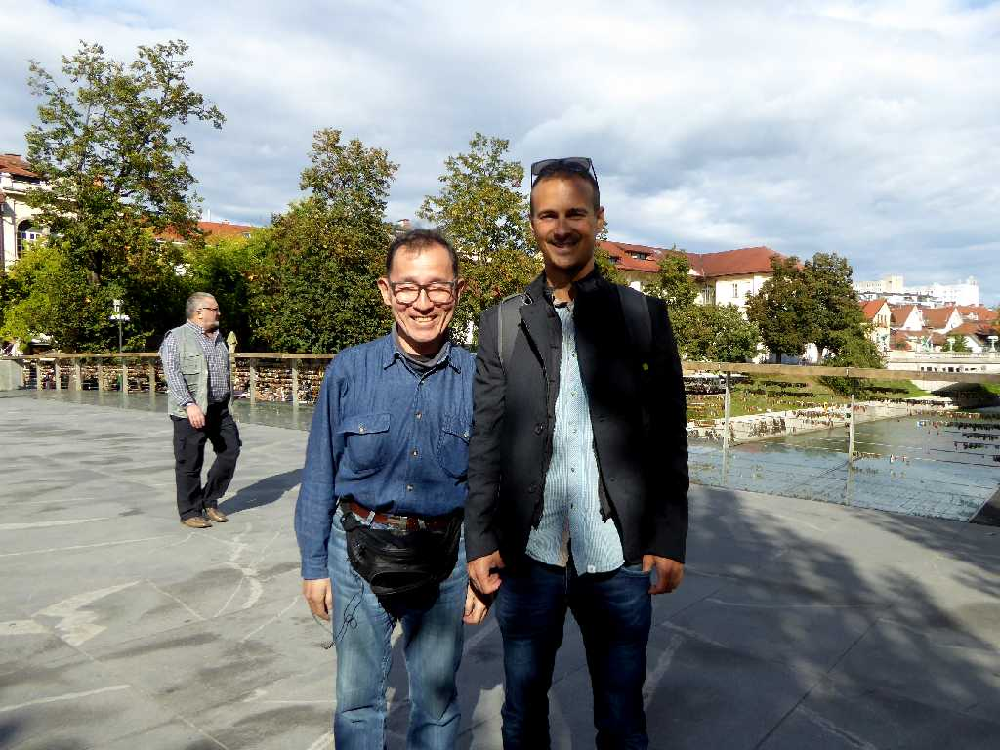

Mestni trg Ljubljana
リュブリャナの中心街に位置する市庁舎前広場

Mestna hiša
リュブリャナ市庁舎

Ljubljanski grad
火事の警告や重要な来訪者を大砲で告げるため市街を見下ろす丘に創られたリュブリャナ城

View from Castle Ljubljana
リュブリャナ城から市街を望む

ljubljanska stolnica
１７０６年に創られたバロック様式のリュブリャナ大聖堂

ljubljanska stolnica

October 6 2016 Frančiškanska cerkev Prešernov trg
旧市街の中心地プレシェーレン広場にあるフランシスコ受胎告知教会

Frančiškanska cerkev

October 6 2016 Ljubljana